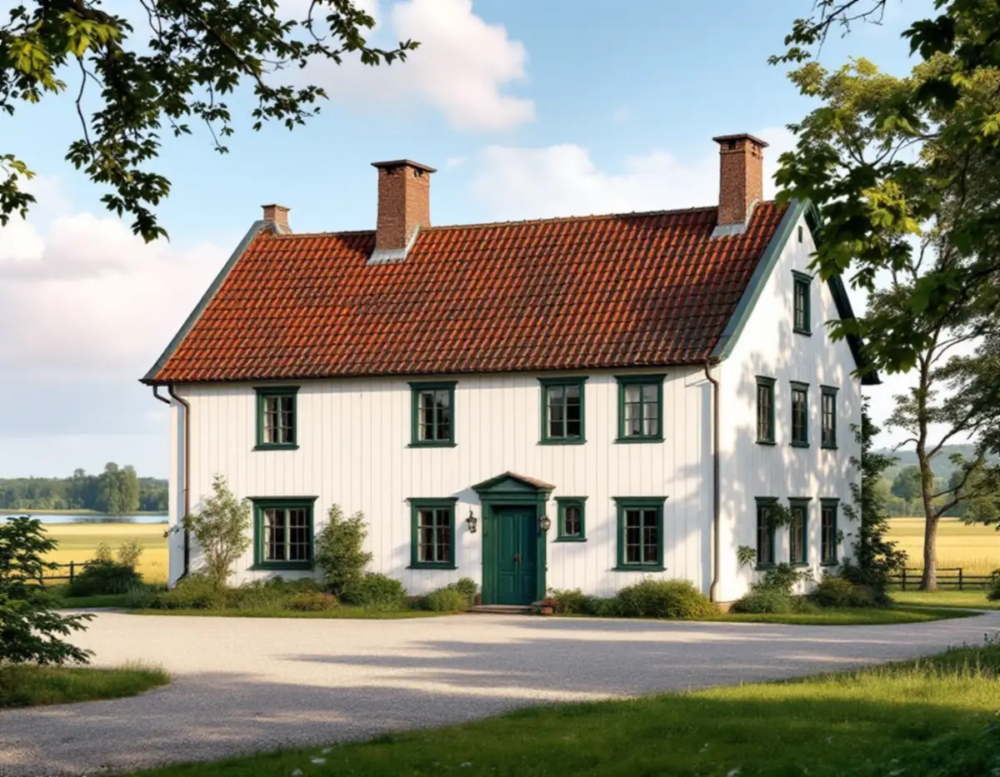
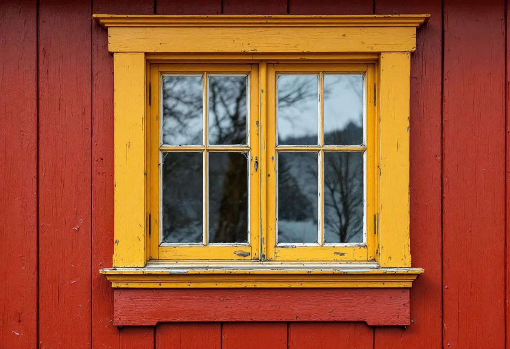
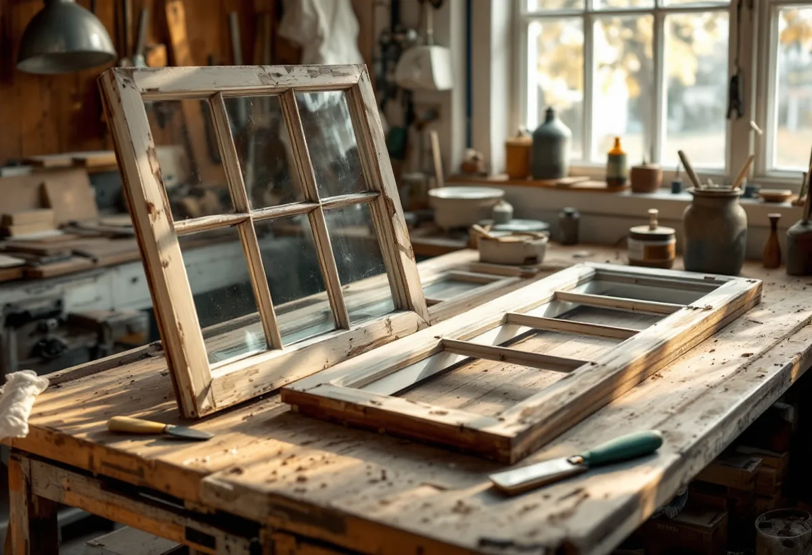

Platsbesök
Vi går igenom fönstren på bostadshuset och uthusen och noterar kulör, indelning och skador.
Söder om Vallentunasjön ligger Täbys gamla storgårdar, och kommunens kulturmiljöunderlag beskriver fönster i olika kulörer från gård till gård. Geal Entreprenad AB renoverar fönster i hela Täby – kittar, lagar bågar och spröjs och målar med linoljefärg – och utgår från den färgsättning som redan finns på huset.

Kunskapsunderlaget Kulturmiljöer i Täby beskriver jordbrukslandskapet söder om Vallentunasjön, med Hagby, Litsby, Såsta, Broby, Karby, Valla, Visinge och Efraimsberg, som en förhistorisk centralbygd med lång brukningskontinuitet. Under 1800-talet slogs egendomar samman till medelstora och stora gårdar, och några fick karaktär av mindre herrgårdar med påkostade manbyggnader. Karby gårds huvudbyggnad uppfördes 1864, och Visinge har en huvudbyggnad från 1780-talet.
Större delen av området ligger inom riksintresset för kulturmiljövården Skålhamravägen (AB 71). Underlaget skriver att ett sådant område sannolikt också är ett särskilt värdefullt område enligt plan- och bygglagen 8 kap. 13 §. Riktlinjerna säger att befintliga karaktärsdrag bör tas tillvara, att den lokala byggnadstraditionen ska fortsätta vara tongivande och att ombyggnader vid gårdsmiljöerna bör anpassas i material och färgsättning. Ett renoverat originalfönster gör just det. Är ett fönster för skadat för att lagas finns mer under fönsterbyte i Täby.

Underlaget beskriver färgsättningen gård för gård. Såsta gårds äldre huvudbyggnad från 1700-talet är en timrad tvåvåningsbyggnad med vit panel, och där är knutbrädor, fönstersnickerier och fönsterfoder mörkgröna. Broby har faluröd panel, profilsågade fönsterfoder och fönstersnickerier i guldockra. På Visinge är panelen målad med gul oljefärg, knutarna vita och fönstersnickerierna gröna. Fittja gård, väster om kyrkbyn, har årtalet 1864 i frontespisen och bruna fönstersnickerier.
Riksantikvarieämbetets handbok om byggnadsmåleri skriver att äldre färgsättning och kulörval bör bevaras, eftersom de i regel är typiska för den tid huset kommer från eller har brukats under. Handboken råder också att spara några små provytor utan behandling på undanskymda ställen och att bevara uppgifter om vilka material renoveringen gjordes med, så att nästa renovering har något att gå på. Vi gör så när vi skrapar bågarna: en liten yta får vara kvar, och vi skriver ner kulör och färgtyp åt dig.
Flera av gårdarnas fönster är indelade i små rutor. På Visinge finns flera olika fönstertyper, och i bottenvåningen sitter tvåluftsfönster som är småspröjsade i övre delen. Såstaholms huvudbyggnad, som började uppföras 1903, har ljust putsad fasad och småspröjsade fönster, och de två boningshusen vid Marielund har tvåluftsfönster med spröjs och dekorativa foder. Även Såsta gårds vagnslider har vita småspröjsade fönster i en rödfärgad lockläktpanel.
Riksantikvarieämbetets skrift om fönster beskriver att spröjsar skadas på samma sätt som bågens nederstycke. Angreppen är ofta små men kan vara allvarliga, eftersom spröjsarna är så klena, och röta uppstår både i kittfalsen och i fogarna mot bågen. Ska en hel spröjs ersättas måste glas och beslag tas bort så att bågen kan slås isär, och den nya spröjsen tillverkas med den gamla som förebild och tappas på samma sätt. Vid mindre skador kan de skadade delarna bytas utan att bågen tas isär. Därefter kittas varje ruta med linoljekitt.
Täby kommun skriver att en fasadändring kan vara att byta kulör, och att en- och tvåbostadshus inte behöver bygglov för fasadändringar om byggnaden inte är särskilt värdefull, ligger i ett särskilt värdefullt område eller har utökad lovplikt i detaljplanen. I Broby är den äldre bostadsbebyggelsen skyddad i detaljplan. Att skrapa, kitta och måla bågarna i samma kulör som i dag är underhåll, men ska fönstren få en ny kulör på en av gårdarna bör du fråga kommunen först.
Underlaget säger också att äldre ekonomibyggnader bör bevaras och att ombyggnad bör ske hänsynsfullt om de får ny användning. Deras fönster renoveras på samma sätt som bostadshusets, men rotavdraget skiljer sig: för ett småhus på en lantbruksenhet ger Skatteverket avdrag för arbete i bostadsbyggnaden och på tomten runt den, inte på ekonomibyggnader. Om målning av fasad och snickerier kan du läsa under målare i Täby och om nya fönster under fönsterbyte.

Vi går igenom fönstren på bostadshuset och uthusen och noterar kulör, indelning och skador.
En liten yta skrapas fram för att se vilka färglager och kulörer bågarna har haft.
Kittning, spröjslagning och målning står för sig, byggnad för byggnad.
Bågar med skadade spröjsar tas isär vid behov och lagas med virke av samma slag.
Rutorna kittas med linoljekitt och bågarna målas i tunna lager i gårdens kulör.
Vi visar provytan som har sparats och lämnar uppgifter om kulör och färgtyp.
Skatteverket räknar reparation och målning av fönster i ett småhus som rotarbete. På en lantbruksenhet gäller avdraget bostadsbyggnaden och tomten runt den, inte ekonomibyggnaderna, och du ska äga bostaden när arbetet utförs.
Avdraget är högst 30 procent av arbetskostnaden, högst 50 000 kr per person och år och högst 75 000 kr tillsammans med rutavdrag. Det är bara arbetskostnaden som ger avdrag. Geal drar avdraget direkt på fakturan.
Antalet fönster och lufter, hur många småspröjsade rutor som ska kittas om, om spröjsar eller bottenstycken behöver bytas och hur många byggnader på gården som ingår påverkar mest. Efter ett gratis platsbesök får du ett skriftligt kostnadsförslag.
Byta eller renovera fönster.
Fönsterbyte i Stockholm →Takbyte, takbesiktning och plåtarbeten.
Takläggare i Täby →Näsbypark, Viggbyholm och Gribbylund.
Takrenovering i Täby →Detaljplan, Q-märkning och VA-inkoppling.
Attefallshus i Täby →Kulör per kvarter och provytor.
Fasadmålning i Täby →Villastäder och grupphus i Täby.
Fönsterbyte i Täby →Radhuslängor, villor och nya gästhus.
Badrumsrenovering i Täby →Tillbyggnad, gästhus och renovering.
Byggföretag i Täby →Tegelvillor, kedjehus och grupphus i Täby.
Fasadrenovering i Täby →Villor, radhus och kedjehus från 1970- och 80-talen.
Golvläggare i Täby →Laga och slipa golvet efter en riven vägg.
Golvslipning i Täby →Grupphus, radhus och villor vid banan.
Köksrenovering i Täby →Trävillor, puts och kedjehus i Täby.
Målare i Täby →Stationsvillor, funkis och grupphus i Täby.
Plåtslagare i Täby →Verandor, fönster och carport.
Snickare i Täby →Betongpannor, kedjehus och tegelvillor.
Takbyte i Täby →Ny tapet mot lister och foder.
Tapetsering i Täby →Byle, kyrkbyn och detaljplanen.
Tillbyggnad i Täby →Ett hus som går att bo kvar i.
Totalrenovering i Täby →